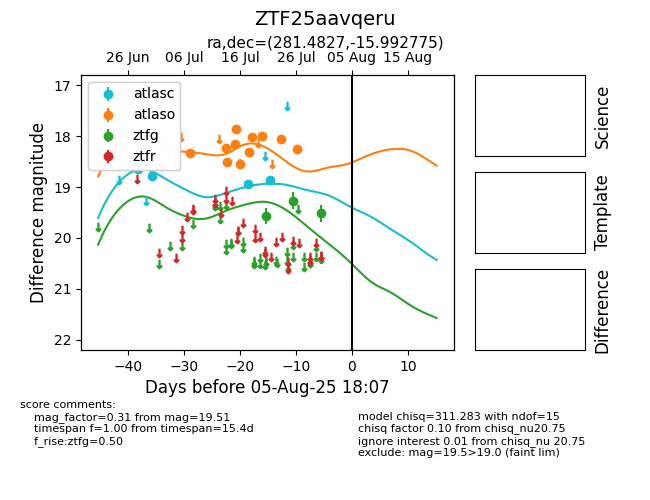

Target ZTF25aavqeru at 2025-08-05 18:07, see:
FINK: fink-portal.org/ZTF25aavqeru
Lasair: lasair-ztf.lsst.ac.uk/objects/ZTF25aavqeru
ALeRCE: alerce.online/object/ZTF25aavqeru
alt names
ZTF25aavqeru (ztf,fink)
coordinates:
equatorial (ra, dec) = (281.4827,-15.99277)
galactic (l, b) = (18.0302,-6.03144)
photometry
last atlasc=18.86, atlaso=18.25, ztfg=19.51
4 atlasc, 13 atlaso, 3 ztfg detections
